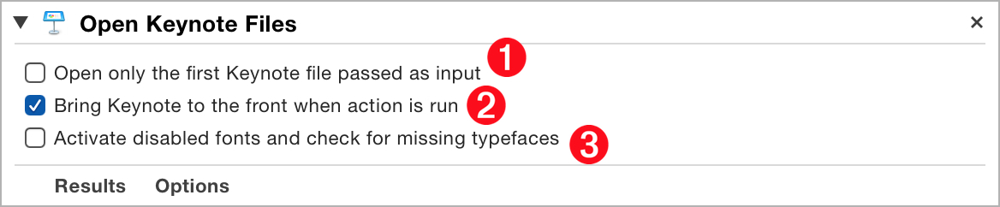
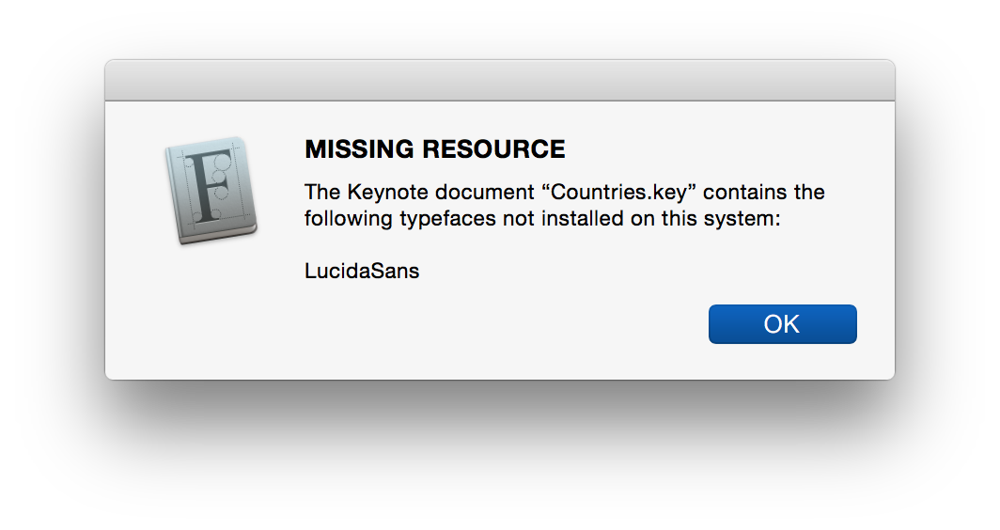
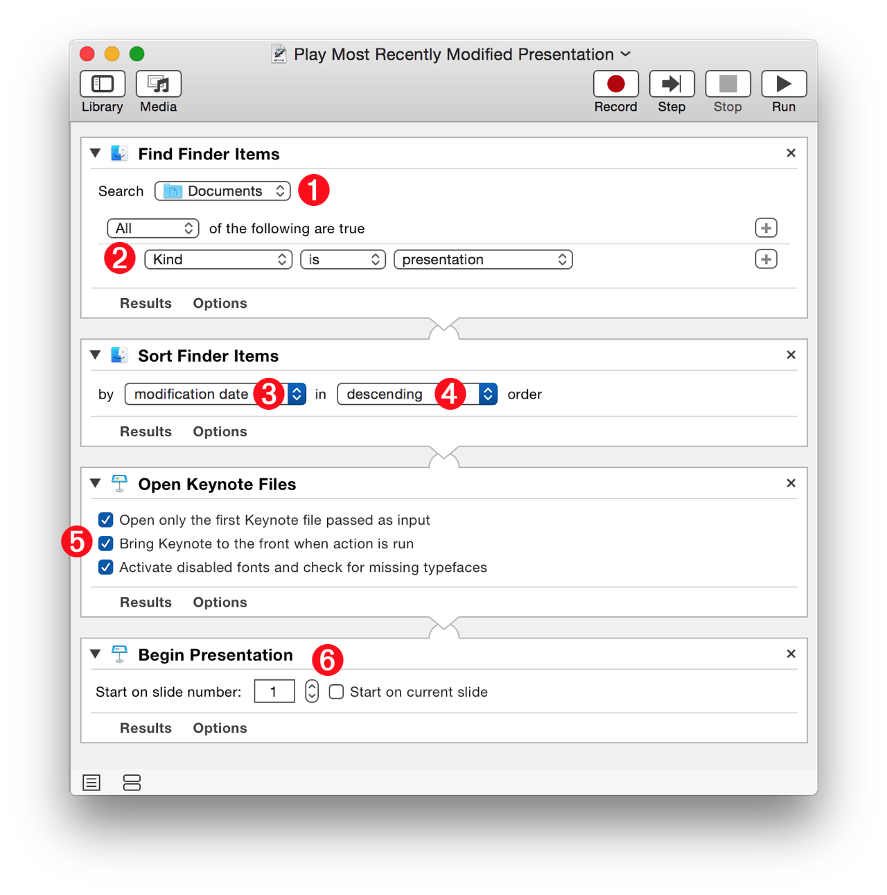

The “Open Keynote Files” Automator action is used to open specified Keynote documents. This action accepts references to Keynote document files as its input. When its containing workflow is executed, this action returns a reference to any Keynote documents it opens.
The Action Information
| Input: | References to the Keynote or Microsoft PowerPoint files to be opened |
| Output: | AppleScript reference(s) to the opened document(s) |
| Parameters: | User-settable parameters include:
|
| Note: | Supported file types for opening include:
|
| Related: | Other actions that often precede this action:
|
| Related: | Other actions that often follow this action:
|
The Action Interface

1 Open Single Input Item • Select this option to open only the first file whose reference is passed to the action as input. This option is particularly useful when the action is preceded by an action, such as Spotlight, that may provide multiple items when the host workflow may be designed to process a single document.
2 Activate Keynote • Select this option to make Keynote the frontmost application.
3 Perform Font Check • When this option is selected, the Font Book application will be used to ensure that typefaces used by the input documents are installed and active. If a typeface is found to be missing from the fonts installed on the host system, an alert will be posted in the Font Book application (⬇ see below )

Here’s a simple workflow that incorporates the use of all three parameters available in the “Open Keynote Files” action. This workflow will open the presentation that was the most recently saved, modified, or opened:
1 Search Location • The first step is to locate presentation files. From the path popup menu, select the folder in which to search for presentation files, for example the Documents folder.
2 Search Parameters • Set the search parameter to look for presentation documents in the indicated folder.

3 Sorting Parameter • Once presentation files have been located, sort them by a property such as modification date.
4 Sort Order • Sort the items in descending order so the most recent is the first in the sorted list.
5 Opening Parameters • Set the parameters to use when opening the indicated document. Select the option to open only the first (in this case, the most recent) presentation file passed as input to the action.
6 Starting Slide • Begin the presentation from the indicated slide (1).
DOWNLOAD the example workflow file and installer. The installer will activate the system-wide Script Menu and add the workflow to the menu.
TIP: To open the installed workflow in Automator, hold down the Option key and select the workflow title from the Script Menu.